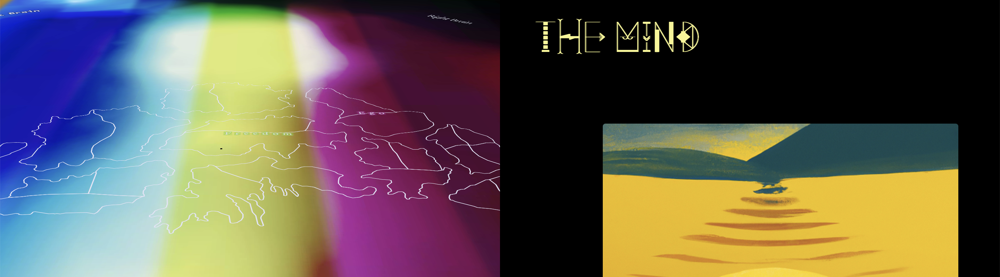
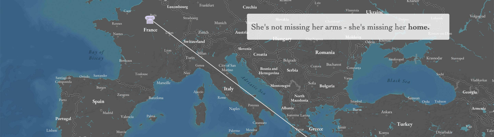
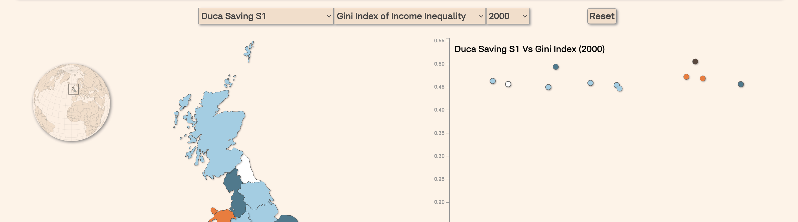

Education Courses




This course provides a comprehensive overview of conceptual and technical design topics related to dynamic mapping, topics typically considered under the cartographic research thrusts of Interactive Cartography and Geovisualization. Specifically, it discusses user interface (UI) and user experience (UX) design as applied for web maps, drawing from research and practice on Human-Computer Interaction, Information Visualization, Usability Engineering, and Visual Analytics, perspectives that students are unlikely to receive in other GIS courses. The course emphasizes mapmaking over map use (compared to 170) and the design of interfaces to maps rather than the maps themselves (compared to 370 and 572). The class is divided into two components: lectures and labs.
Check out past syllabi and finals projects below!
Instructor: Robert Roth
TA: Gareth Baldrica-Franklin
Curriculum Overview
G370: Introduction to Cart
G572: Graphic Design
G575: Interactive Cart
G970: Cartography Seminar
Web Mapping Workbook
Mapping for a Sustainable World Textbook
QGIS Open Source Tutorials
Design Challenge
Cart Lab Education Series (CLES)
Educational Resources
Github Projects
Contact Us